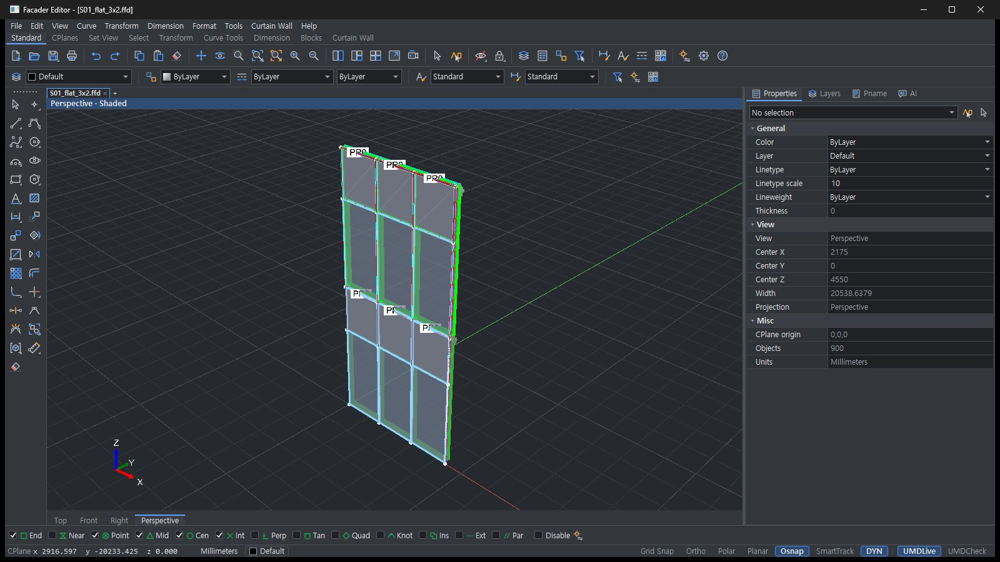
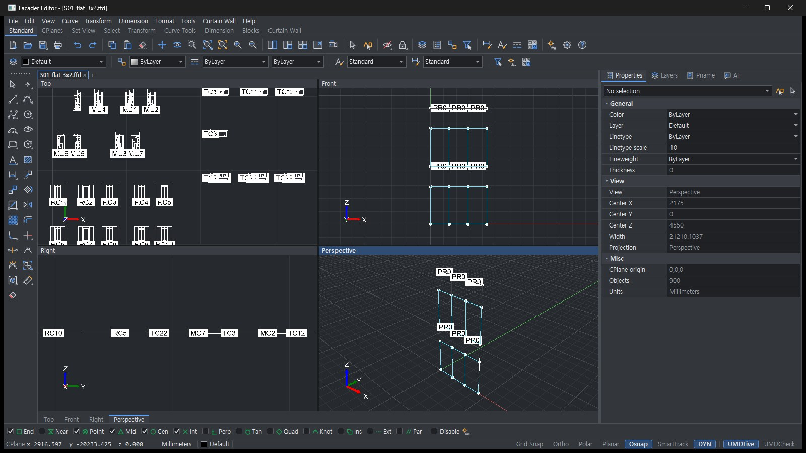
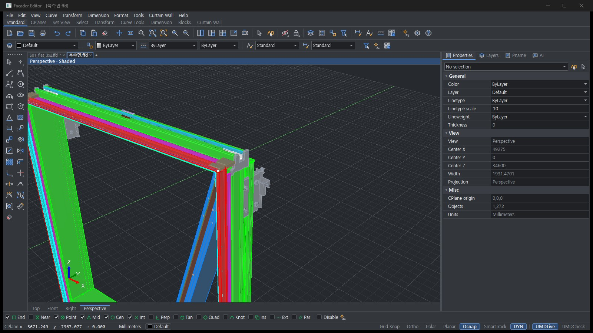

0.1.6-preview
Facader
Editor
Rhino 없이, 빠르게, 대용량으로 —
커튼월 전용 CAD
와이어프레임 입력에서 3D 모델 · 번호 · 자재 목록 · 가공도까지 한 프로그램에서

2026. 11. 17 · 제품 소개
왜 만들었나
느린 것은 계산이 아니라 화면과 파일이었다
RCW 로 만든 완성 입면을 Rhino 8 에서 재 본 값입니다.
1.09
fps — Shaded 전체 보기
삼각형 8,001만 개를 화면에 그릴 때
8.5
분 — 3dm 열기
완성 형상을 모두 담은 파일 1,204 MB
57.8
초 — 유닛 블록 50개 복사
화면 갱신을 끄면 같은 일이 1 ms
그래서 방향을 바꿨습니다. 형상을 문서에 쌓아 두지 않고, 규칙(조리법)만 저장했다가 필요할 때 만든다 — Rhino 밖의 독립 프로그램으로.
Facader Editor
한눈에
입력에서 제작 산출물까지, Rhino 없이 한 프로그램
편집기에서 그리고, 엔진이 만들고, 화면과 산출물이 같은 데이터에서 나옵니다.
① 자체 입력
Facader Editor
Rhino 처럼 쓰는 커튼월 전용 편집기. 3dm · DWG · DXF 를 그대로 가져온다
② 엔진
규칙 → 조리법 → 형상
와이어프레임과 단면에서 부재 · 가공을 정하고, 필요할 때 3D 를 만든다
③ 뷰어 · 산출물
3D · 번호 · 목록 · 가공도
화면, 번호, 자재 목록 xlsx, 가공도, 3D 내보내기가 같은 조리법에서
경계 규칙 — 계산은 엔진, 결과물은 화면. 저장되는 진짜는 입력 표이고, 3D 메시는 언제든 다시 만들 수 있는 사본입니다.
Facader Editor
핵심 개념
기하가 아니라 조리법을 저장한다
부재 하나 = 단면 + 축선 + 구간 + 가공 목록. 형상은 필요할 때 만듭니다.
완성 모델은 네 가지 형상
A 가공된 프리즘 — 멀리언 · 트랜섬 등 프레임 부재
B 슬래브 — 유리 · 단열재 · 면판
C 접은 판 — 백판넬 팬 · 판재
D 강체 — 브래킷 · 슬리브 · 앵커
가공은 여섯 종류
EndCut 단부 절단 · Coping 접합
Notch 블록 노치 · Slot 밀링
HolePattern 구멍 · EndDam
B-rep 커널 없이 2D 폴리곤 연산 + 삼각화로 만든다
파일이 작다
형상 대신 입력 표(SQLite)를 저장
번호가 빠르다
조리법 지문이 같으면 같은 번호
가공도가 바로 나온다
숨은선 계산 없이 해석적 2D
Facader Editor
주요 기능 1 · 편집기
Rhino 처럼 쓰고, AutoCAD 처럼 고르는 CAD
화면 · 조작 · 명령 이름이 익숙한 그대로라 새로 배울 것이 적습니다.

Rhino 식 화면
네 뷰 · 명령 줄 · 패널 · 별칭, 보기 방식 세 가지
AutoCAD 식 고르기 · 명령 줄
클릭 더하기 · 창 · 올가미 · 커서 옆 동적 입력
2D CAD 기본기 + 자동화
스냅 · 레이어 · 블록 · 치수 · 해치 · 다이나믹 블록, AutoLISP · SCRIPT
Facader Editor
주요 기능 2 · 커튼월 명령
RCW 명령 이름 · 순서 그대로
와이어프레임에서 목록까지, RCW 사용자가 아는 흐름을 그대로 따릅니다.
1
Wire Frame
L0~L50 · WVector
멀리언 · 트랜섬 중심선으로 유닛을 그린다
2
Section 정의
Pname · Dtable
단면 데이터를 패널에서 바로 넣고 고친다
3
Section 선택
SSP · GS · BP
쓸 단면 세트, 칸마다 유리와 백판넬 유형
4
3D 모델링
UMD · UMDLive
유닛 3D 생성 — 고친 유닛만 다시 만든다
5
번호 부여
FabNo · FabTable
같은 조리법이면 같은 번호를 매긴다
6
리스트 & 도면
Molist · Cuttinglist · FDwg
자재 · 절단 목록 xlsx 와 가공도
Facader Editor
주요 기능 3 · 3D 엔진
명령 한 번에 입면 전체가 3D 로
예제 입면을 0.1.6 설치판에서 UMD 로 돌린 값입니다.
31
유닛
1,594
부재
2,704만
삼각형
약 10 초
계산 · 9.3 ~ 14.3 초
UMDLive — 즉시 연동
와이어를 고치면 그 유닛만 다시 만든다

Facader Editor
주요 기능 4 · 산출물
번호 · 목록 · 가공도가 모델에서 바로
산출물은 화면을 거치지 않고 엔진의 조리법에서 나옵니다.
FabNo · FabTable
부재 번호 — 조리법 지문이 같으면 같은 번호
Molist · Cuttinglist
자재 · 절단 목록 xlsx, RCW 와 같은 양식
UnitList · UnitTable
유닛 목록과 표 — 입면의 유닛 블록 기준
FDwg · F2d · U2D
가공도 · 유닛 2D — 조리법에서 바로 그린다
GsNo · BpNo · ShNo
유리 · 백판넬 · 판재의 번호와 목록
Export
3dm · DWG · DXF · STEP 으로 3D 내보내기
★ 0.1.6 기준 — 가공도 · 유리 · 백판넬 · 판재 산출은 작은 모형으로 확인한 단계, NC · IFC 는 다음 차례
Facader Editor
주요 기능 5 · 파일 호환
3dm · DWG · DXF 를 그 형태 그대로
가져온 객체는 원래 형상과 데이터째 들어오고, 내보낼 때도 지킵니다.
| 형식 | 가져오기 | 저장 · 내보내기 |
|---|---|---|
| Rhino 3dm | Rhino 객체 그대로 — 와이어 · 단면 · 3D 몸체와 RCW 데이터까지 | 안 바뀐 객체는 원래 형상 그대로, 만든 3D 는 닫힌 Brep 으로 |
| DWG · DXF | 블록 · 치수 · 해치 · 다이나믹 블록 · 3DSOLID 를 CAD 객체 그대로 | 원본 + 바뀐 것만 다시 쓴다 — AutoCAD AUDIT 로 확인 |
| .rcw | 편집기 작업 파일 — 원본 3dm 없이 혼자 열린다 | 입력 표 + 화면 사본을 한 파일에 저장 |
| .ffd · STEP | .ffd = 입력 표만 담은 가벼운 전송용 파일 | 3D 를 STEP 으로 내보내 다른 CAD 에서 연다 |
원칙. 가져오기는 그 파일의 형태 그대로, 내보내기는 그들의 방식으로 새로 쓴다.
Facader Editor
주요 기능 6 · 대용량 · 속도
큰 입면도, 큰 도면도 가볍게
보이는 것만, 필요한 만큼만 그립니다 — 사본 배치 · 세밀도 단계 · GPU 셰이더.
60
fps — 유닛 5,016개 입면
뷰어에서 전체를 볼 때. 다시 열기 3초
4
초 — 17.9 MB DWG 열기
이전 판 11초에서 약 2.5배 빨라짐
1.5
GB — DWG 최대 메모리
이전 2.8 GB — 해치 · 글자를 GPU 로
편집 반응
선 20,000개 도면에서 그리기 · 편집 명령 60 fps
0.1.6 에서
복사 · 지우기 · 창 고르기 약 4배 빨라짐
Facader Editor
구동 동영상
와이어프레임에서 3D · 번호 · 목록까지
1 와이어프레임 입력
2 UMD — 유닛 3D 생성
3 돌려 보기 · 확대
4 FabNo — 부재 번호
5 Molist — 자재 목록
6 예제 입면 — 유닛 31
0.1.6 설치판 화면 · 약 1분. 캡션과 목록 카드는 덧붙인 것
검증
RCW 결과를 정답으로 놓고 견줍니다
단계마다 같은 입력으로 RCW 가 낸 결과와 수치로 비교합니다.
824/824
부재 형상 통과
RCW 대비 부피 0.1 % · 표면 거리 0.5 mm 안
39
종 — DWG 요소 왕복 시험
내보낸 도면을 AutoCAD 에서 검사
781
개 — 자동 시험
단위 시험 675 · 화면 시험 스크립트 106
정답 먼저. 통과 기준(부피 0.1 % · 표면 0.5 mm · 목록 행 단위 일치)을 먼저 정하고, 설계 결정은 기록 문서(ADR) 30건으로 남겼습니다.
Facader Editor
장점 요약
Rhino + RCW 와 무엇이 다른가
| 기준 | Rhino + RCW | Facader Editor |
|---|---|---|
| 실행 환경 | Rhino + 플러그인 | 독립 프로그램 — 설치 파일 72 MB, 관리자 권한 불필요 |
| 모델 저장 | 완성 형상을 3dm 에 | 조리법(입력 표) + 다시 만들 수 있는 화면 사본 |
| 큰 입면 표시 | Shaded 1.09 fps | 뷰어 60 fps (유닛 5,016개) |
| 번호 매기기 | 부재 형상(모서리) 비교 | 조리법 지문 먼저, 처음 보는 것만 형상 비교 |
| 가공도 | 3D 에서 숨은선 계산 | 조리법에서 바로 그리는 해석적 2D |
| 2D 도면 | 별도 CAD 에서 | 같은 프로그램에서 DWG · DXF 편집 |
Facader Editor
현황 · 0.1.6-preview
지금은 미리보기판 — 된 것과 남은 것
2026-11-16 설치 프로그램으로 처음 묶은 사내 미리보기판입니다.
된 것
- 설치 프로그램 — Windows 10 · 11, 관리자 권한 없이
- 2D CAD 와 3dm · DWG · DXF 왕복
- UMD 3D — 프레임 · 유리 · 백판넬 · 브래킷
- 번호 · 자재 목록 · 유닛 목록 xlsx
- 큰 입면 뷰어
남은 것
- 번호 · 목록을 RCW 와 행 단위로 맞추기
- 지금: 번호 글자 359/710 · Molist 128/172 일치
- 벤트 · 그릴
- NC · IFC 출력
- 새 산출 명령의 실제 모형 검증
★ 미리보기판의 결과는 검토용입니다 — 제작 발주에는 RCW 결과를 씁니다.
Facader Editor
다음 단계
미리보기판에서 판매판까지
먼저 RCW 와 같은 결과, 그다음 RCW 에 없던 것.
1
가까운 것
- 번호 · 목록 RCW 일치
- 실제 모형으로 시험
- 벤트 · 그릴
2
그다음
- NC · IFC 출력
- 편집기에서 직접 모델링
- Revit 연결 — 조리법 전달
3
판매판
- 코드 서명 · 사용권 관리
- 자동 업데이트 · 설명서
- 한국어 화면 · .NET 10
그리고 이 모든 것 위에 — AI 패널
말로 지시하면 AI 가 모델을 읽고 스스로 만들어 간다. 가야 할 방향은 다음 장에서
Facader Editor
가야 할 방향 · AI 패널
명령을 치는 CAD 에서, 일을 맡기는 CAD 로
편집기 안의 AI 패널에 말로 지시하면, AI 가 모델을 직접 읽고 만들어 갑니다.
시험 중
Shop 도면에서 Section group 까지
Shop 도면을 읽어 단면 묶음(Section group)을 바로 뽑아낸다
11-16 시연 · 다음 장 영상
보고 배워서 스스로 모델링
이미 만든 모델을 참조 · 분석해, 같은 방식으로 다음 모델을 스스로 만들어 나간다
지금 동작
사람은 지시하고 확인한다
문서를 바꾸는 단계는 실행 · 거절로 확인하고, 작업 일지를 남겨 이어서 한다
이것이 Facader 가 가야 할 방향입니다
사람이 그리는 모델에서, AI 가 함께 만드는 모델로
11-16 시연: 4층 55유닛 · 칸 183개를 약 3분 25초에 — 지우기 전 모델과 칸 종류 181 / 183 일치
AI 패널 시연 ① 만들기
3층을 참조해 4층을 스스로 모델링
1 한 문장으로 지시
2 도면 · 3층 모델 읽기
3 제안 표 → 진행
4 입면마다 3D 생성
55 유닛 · 칸 183개
실제 약 3분 25초
개발판 화면 그대로 · 배속 재생
AI 패널 시연 ② 확인
만든 모델을 돌려 보고 확대해 확인
1 모델만 남기고 끔
2 한 바퀴 — 뒷면까지
3 상세 확대
181 / 183 칸 일치
지우기 전 모델과 대조
다른 2칸은 예외 처리가 필요한 작은 칸(W148 · W152)
요약
Rhino 없이, 빠르게, 대용량으로
조리법을 저장한다
파일은 작고 화면은 빠르다 — 형상은 필요할 때 만든다
익숙한 조작
Rhino 화면 · AutoCAD 고르기 · RCW 명령 그대로
한 프로그램에서 끝까지
입력 → 3D → 번호 · 목록 · 가공도, 그리고 2D 도면
그리고 가야 할 방향 — 도면을 읽고, 기존 모델을 보고 배워, 스스로 만들어 가는 AI 패널.
감사합니다 — 질문 받겠습니다.
Rhinoceros® 및 Rhino® 는 TLM, Inc.(Robert McNeel & Associates) 의 등록 상표이고, AutoCAD® 와 DWG 는 Autodesk, Inc. 의 상표입니다. Facader 는 독립적으로 개발된 프로그램입니다.
Facader Editor · 0.1.6-preview